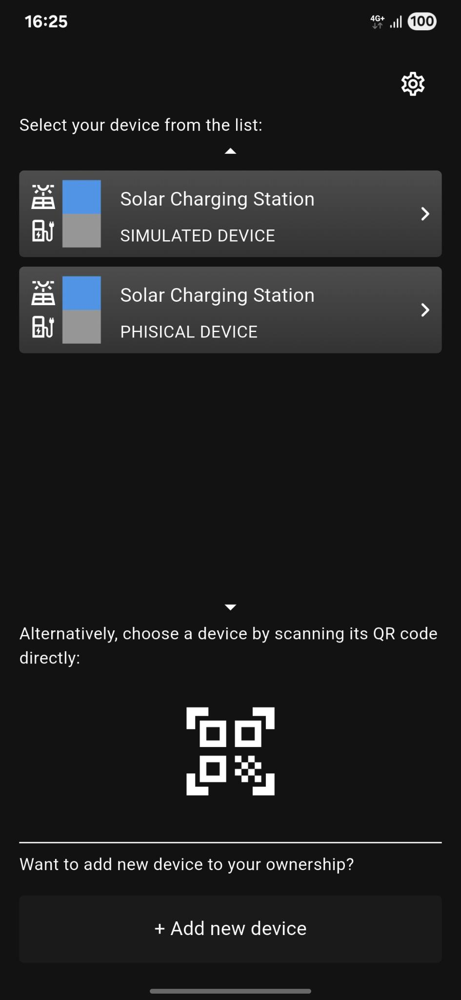
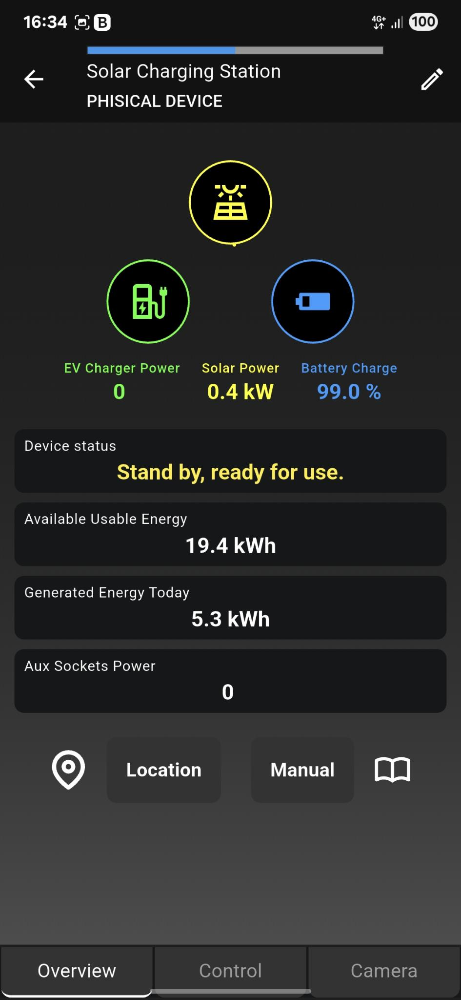
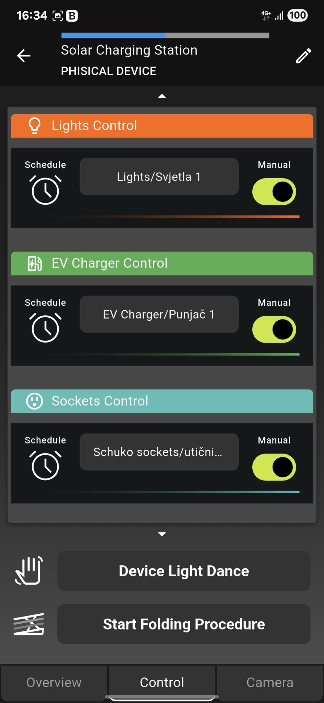
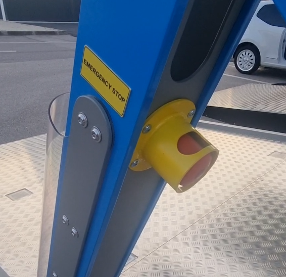
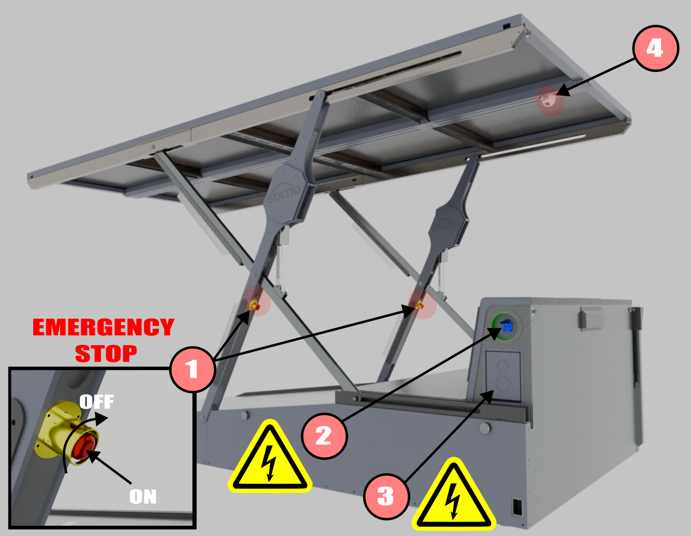
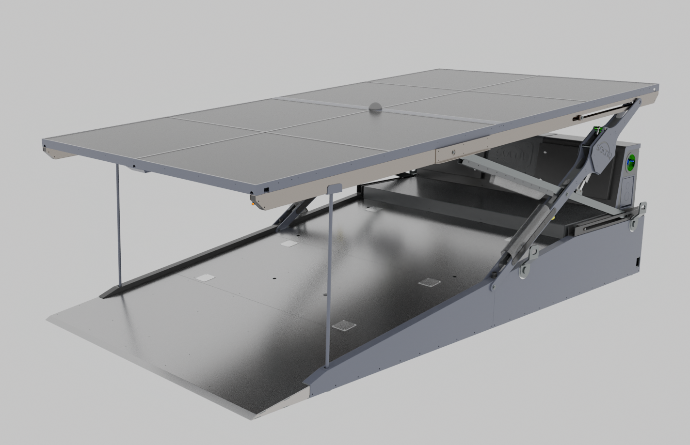
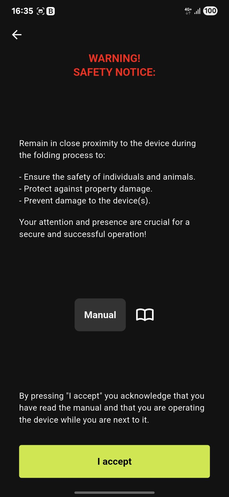
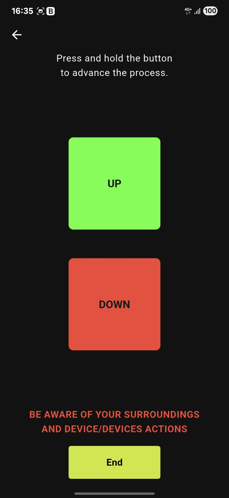
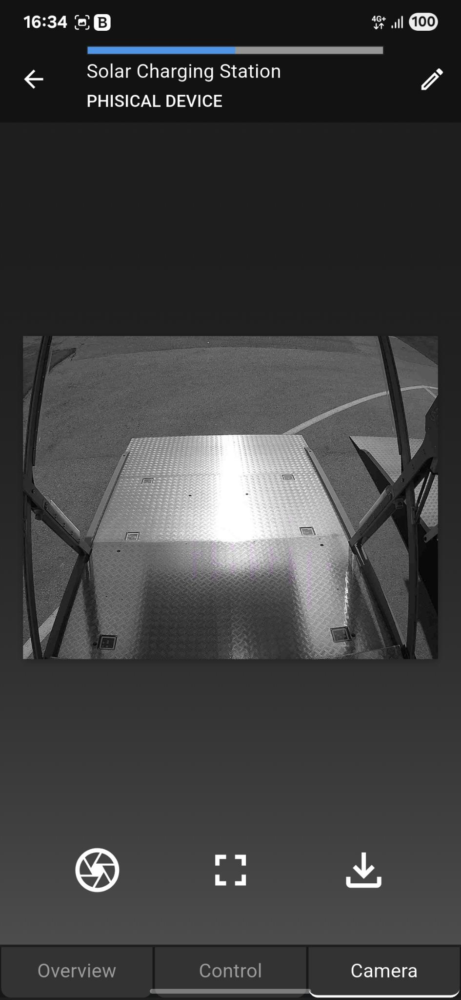

Mobile App Overview¶
1. Device List¶
This screen shows a list of devices you own.

Select one of the devices from the list.
If you don’t see any devices, search this documentation for the topic 'Adding Charging Station Ownership (Mobile App)'.
2. Main Device Overview¶
This screen provides an overview of energy flow and the charging station status.

- Solar panel power, EV charger power, and battery charge percentage
- Device status
- Amount of energy generated (via solar panels)
- Available energy for the EV and other consumers (based on energy estimation)
The available amount of energy depends on environmental conditions: solar radiation intensity, time of day, season, and ambient temperature, which affects battery performance.
- Consumption of Schuko (aux) sockets
- In the top-right corner, there is a "pencil" icon for renaming your device
Additional options:
- Location – shows the charger’s physical location
- Manual – opens the user manual
At the bottom, three tabs are available:
- Overview – the current screen as shown above
- Control – control interface for the charging station
- Camera – live view from the station’s webcam
3. Control – Device Control Interface¶

This screen includes three control sections:
- Lights Control – turn lighting on/off
- EV Charger Control – turn EV charger on/off
- Sockets Control – control the Schuko single-phase sockets
Additional features at the bottom of the screen:
- Device Light Dance – the device performs a "light dance" to make it easier to locate in the dark
- Start Folding Procedure – starts the procedure for raising or lowering the canopy with solar panels
Control Modes (lights, charger, sockets):¶
- Manual (instant control) – the command is applied immediately
- Scheduled (timed control) – the command is executed within a defined time window
Scheduled control includes two options:
- One time – a single-time activation during a specific time period with defined duration
- Repeat – a weekly recurring schedule (e.g., lights on at 19:00, off at 00:00)
Each new command overrides the previous one! For example, a 'One time' command will be cancelled if a new 'Manual' command is sent.
3.1 Canopy Folding¶
Before moving the canopy using the app, the user must be physically present next to the charging station and familiar with the location of the emergency stop button.

The user must ensure that canopy movement does not pose a risk to people or cause material damage.

- Emergency stop buttons
- Schuko single-phase socket
- EV charger
- Web camera
The device is controlled via a mobile LTE network, which may result in communication loss during the folding process. Therefore, the user must be physically present next to the station and familiar with the emergency stop button locations.
Note on Adverse Weather Conditions¶
The user or owner of the station is responsible for monitoring weather conditions, especially wind speed at the location. In case of strong wind (e.g., noticeable canopy swaying), the user must lower the canopy to the transport position and install the transport support posts to ensure stability in the lowered configuration.

In-App Confirmation¶
Confirmation view that the user has read the instructions, is present next to the station, and has ensured safe movement of the canopy.

Canopy Lift/Lower Interface¶
To activate the canopy actuators, press and hold the direction button (Up or Down).
Releasing the button stops the canopy movement.
Internet/LTE connection may be lost – in such cases, use the emergency stop button to halt movement. After reconnection, continue the procedure via the mobile app.
If the station cannot communicate with the server due to poor LTE signal, use the built-in remote control located in the left electrical cabinet (see instructions under 'Initial Canopy Lift Sequence').

4. Camera – Fetching Images from the Charging Station¶

Camera Image Control Buttons¶
Above the tabs at the bottom of the screen, there are three buttons for controlling the camera image display:
-
Capture Image
Captures the current image from the camera and displays it on the screen. -
Fullscreen View
Expands the image to fullscreen on the device. -
Download Image
Downloads the displayed image and saves it to the local device.
Example App control usage for controling the charging station¶
Charging Station Operating Limits¶
- If the station is located in a very hot area, the system may refuse to charge vehicles to prevent inverter overheating. Once it cools down, charging can be resumed (after a new user command).
- During winter, battery capacity may be reduced due to slower chemical processes inside the battery.
- In winter conditions (especially with snow accumulation), solar panels will be less efficient, which may result in charging taking several days.
It is recommended not to use the charging station during cold winter days in order to preserve battery health.
Using the charging station below 10°C and above 40° accelerates battery aging!
Maintenance¶
- Solar panels should be cleaned regularly from dust and dirt to maintain maximum efficiency.
- In case of snowfall – clean the panels after 10 cm of accumulated snow.
Do not allow ice to form on the canopy or solar panels!
- The scissor mechanism and guide rails should be inspected and cleaned regularly to ensure smooth operation.
- Periodically check the inverter's cooling exhaust to ensure unobstructed airflow.